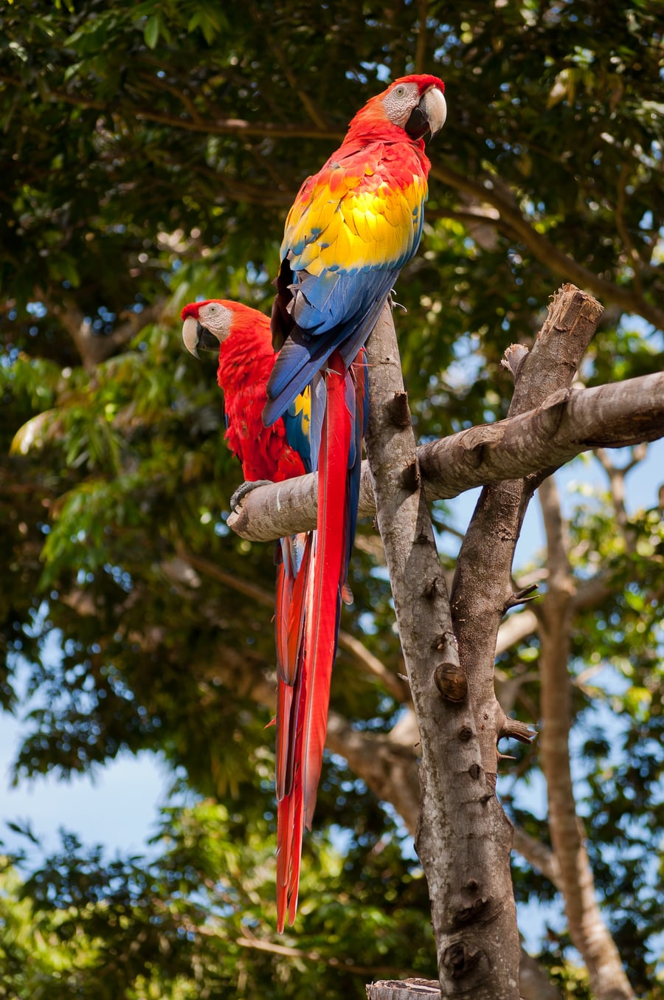
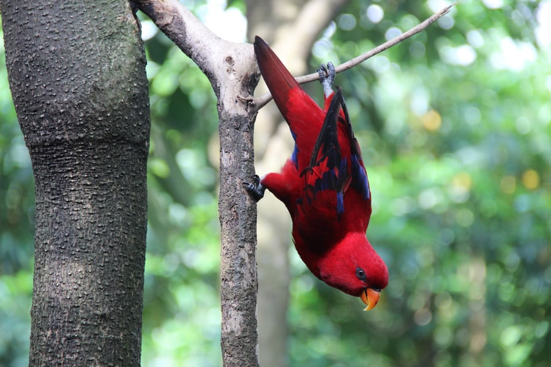

Exotic Bird Information
To tell you more about these exotic birds, lets start from the parrots beggining. They are members of the order Psittacines, which includes more then 350 species of birds. These are including Parakeets, Macaws, Cockatiels and Cackatoos. Thought their are many types of parrots, all parrot species have a few traits in common. One is to be classified as a parrot, the bird must have a curved beak, and it's feet must be zygodactyl.So that means they must have four toes on each foot with two toes that point forward and two that point backwards.
These parrots differ though in categories like size, habitat, habits, diets and even offspring too. Starting with size Parrots can rang in size from about 3.5 to 40 inches. To the worlds heaviest parrot, the kakapo. To the smallest parrot, the bufffacedpygmy parrot. Most parrots that live in the wild live in warm areas of the Southern hemisphere. But they can be found in many regions of the world.
As far as habits go they are social birds that live in groups called flocks. Some as many as 20 to 30 birds. They are usually monogomis and spend their lives with only one mate. Then work together to raise their young. Parrots throught the flock communicate with one another by squwaking or shaking their tail feathers. But some birds are even nocturnal like kakapos. Parrots are omnivores and their diet mostly contains nuts, flowers, fruit, seeds and more. But the strong jaws really help snap open the nutshells to get the seeds that are inside.
